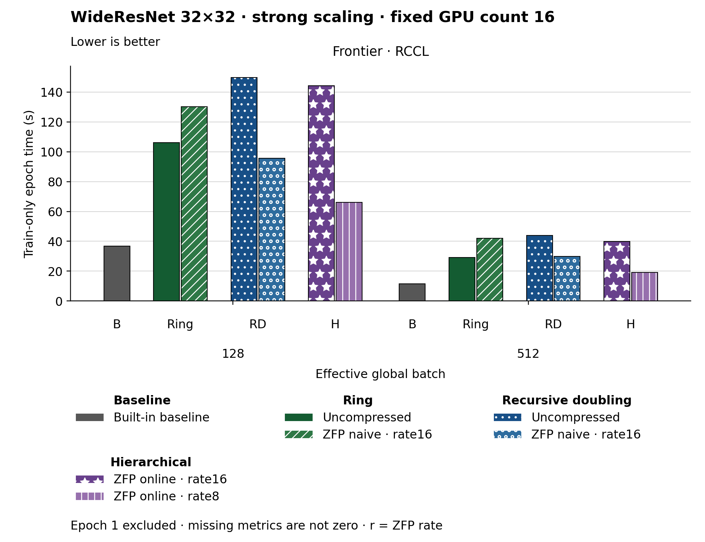

The figure uses bars. Families and methods are identified by text and patterns in addition to color. The metric is Train-only epoch time (s). Frontier · RCCL, Effective global batch 128: Built-in baseline has the lowest plotted value, 36.720. Frontier · RCCL, Effective global batch 512: Built-in baseline has the lowest plotted value, 11.410. Epoch 1 is excluded. Values are medians; when repeated runs are available the selected repeat policy is median. These are not confidence intervals across repeated jobs. Missing or unrecorded metrics are omitted, not set to zero.
| Panel | Effective global batch | Method | Value | Runs |
|---|---|---|---|---|
| Frontier · RCCL | 128 | none | 36.72 | 1 |
| Frontier · RCCL | 128 | ring | 106.02 | 1 |
| Frontier · RCCL | 128 | ring_zfp_naive:16 | 130.14 | 1 |
| Frontier · RCCL | 128 | hierarchical_zfp_online_coll:8 | 65.98 | 2 |
| Frontier · RCCL | 128 | recursive_doubling | 149.72 | 1 |
| Frontier · RCCL | 128 | recursive_doubling_zfp_naive:16 | 95.72 | 1 |
| Frontier · RCCL | 512 | none | 11.41 | 1 |
| Frontier · RCCL | 512 | ring | 29.16 | 1 |
| Frontier · RCCL | 512 | ring_zfp_naive:16 | 42.0 | 1 |
| Frontier · RCCL | 512 | hierarchical_zfp_online_coll:8 | 19.229999999999997 | 2 |
| Frontier · RCCL | 512 | recursive_doubling | 43.87 | 1 |
| Frontier · RCCL | 512 | recursive_doubling_zfp_naive:16 | 29.76 | 1 |
| Frontier · RCCL | 128 | hierarchical_zfp_online_coll:16 | 144.085 | 2 |
| Frontier · RCCL | 512 | hierarchical_zfp_online_coll:16 | 39.945 | 2 |